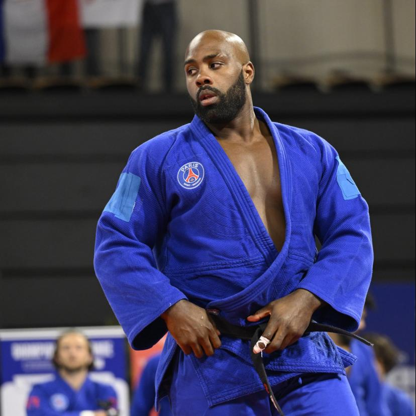

Né le 7 avril 1989 en Guadeloupe, Teddy Riner est un judoka français de légende évoluant chez les poids lourds. Considéré comme le plus grand athlète de l'histoire de sa discipline grâce à un palmarès inégalé de 11 titres mondiaux et 5 médailles d'or olympiques, il a notamment été dernier relayeur de la flamme aux Jeux de Paris 2024. Tout en visant les JO de Los Angeles en 2028, il crée l'événement en novembre 2026 en annonçant sa candidature à l'élection présidentielle de 2027.